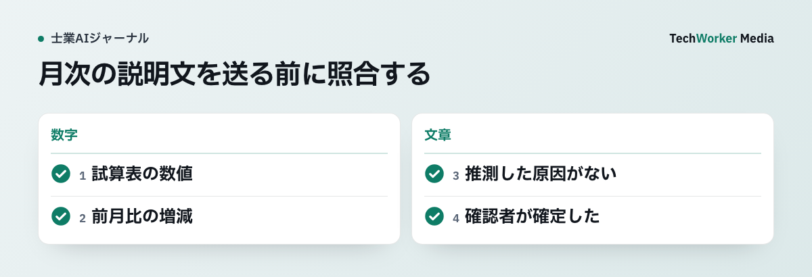

会計データの入力条件を先に決める
顧問先データは、利用目的、契約、学習利用、保存、閲覧者を確認した環境で必要最小限だけ扱います。

顧問先名を伏せても、取引先、金額、日付、摘要の組合せから会社を推測できることがあります。入力可否は「有料版か」では決めません。税理士法上の守秘義務、個人情報保護、顧問契約、事務所の利用規程を確認します。
仕訳候補と税務判断を分ける
AIは摘要整形と候補出しまで、確認者は証憑・会計方針・税務上の取扱いを見て確定します。
| 場面 | AIの作業 | 確定に必要な確認 |
|---|---|---|
| 記帳 | 摘要整形、仕訳候補、証憑不足の候補 | 証憑、勘定科目、消費税区分、計上時期 |
| 月次 | 増減項目の抽出、説明文の下書き | 試算表の数値、増減理由、顧問先確認 |
| 税務調査 | 資料一覧、時系列、質問候補 | 事実認定、回答方針、法令・通達の適用 |
月次説明は数値と理由を別に照合する
数値は試算表へ戻り、増減理由は確認済みの事実だけを書きます。

AIは「広告費の増加は新規キャンペーンによるものです」のように自然な理由を補うことがあります。試算表から分かるのは増減であって、その理由ではありません。理由が未確認なら「要確認」と残し、担当者が顧問先へ確かめます。
試行では、作成時間だけでなく、数値不一致、推測理由、確認差戻し、送信前に見つかった誤りを数えます。候補件数の多さは成果にしません。
税務調査は資料整理までに限定する
過去資料の所在と時系列を整理し、回答方針や法令適用は税理士が決めます。
AIが挙げた条文、通達、裁決例は検索語として扱い、原典の版と基準日を確認します。顧問先の説明と帳簿・証憑が一致しない場合、AIにもっともらしい筋書きを作らせません。不一致をそのまま税理士へ上げます。
税務調査資料は、通常の月次資料より機密度が高くなります。入力前に対象文書と目的を絞り、不要な個人情報や他案件の情報を外します。出力を外部送信する操作は、下書き作成と別の権限にします。
よくある質問
摘要整形や仕訳候補までです。勘定科目、消費税区分、計上時期は税理士または確認担当者が証憑と会計方針を見て確定します。
試算表の数値を照合し、増減理由をAIに推測させません。理由は担当者が確認した事実だけを記載します。
過去資料の所在整理、時系列、質問候補の下書きに使えます。事実認定、回答方針、法令・通達の適用は税理士が決めます。
出典
確認日：2026年10月6日。本文の業務分担はTechWorkerの設計例で、税務判断や導入成果を保証しません。